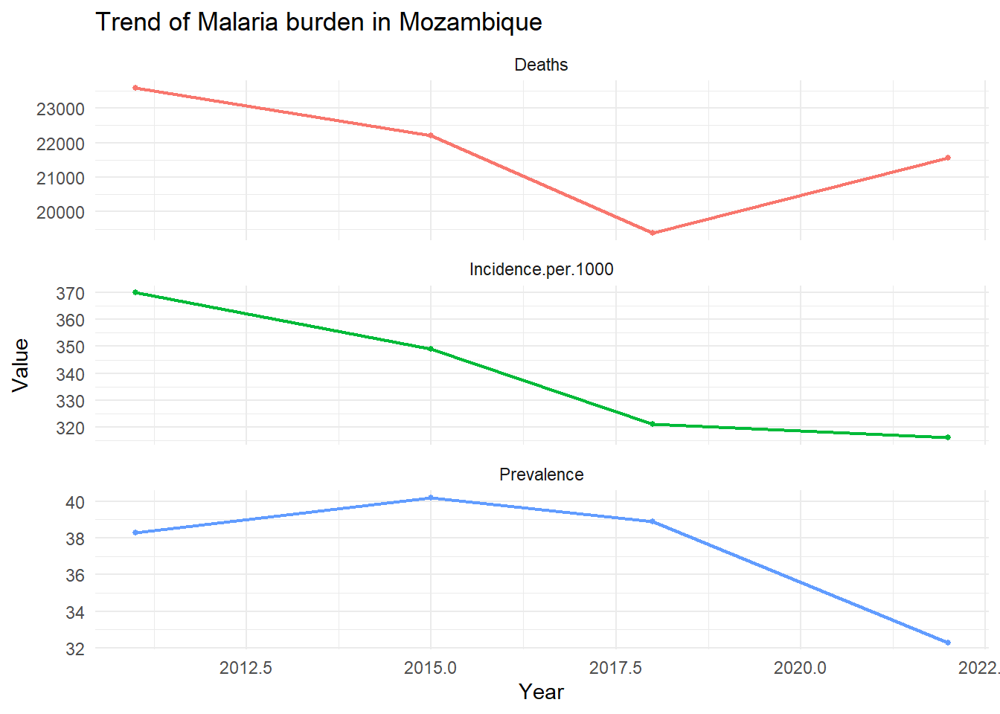
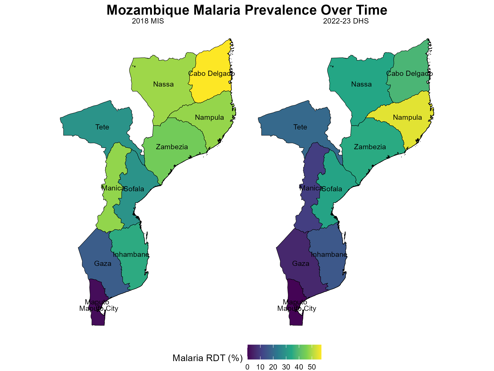
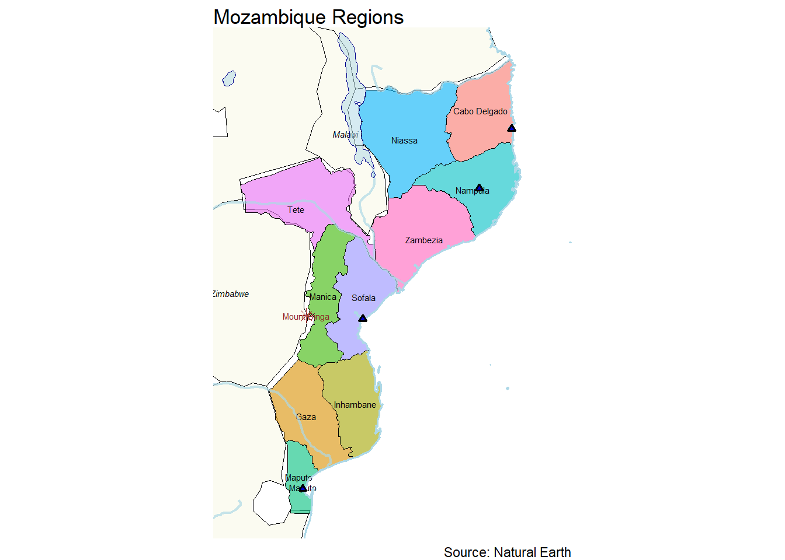
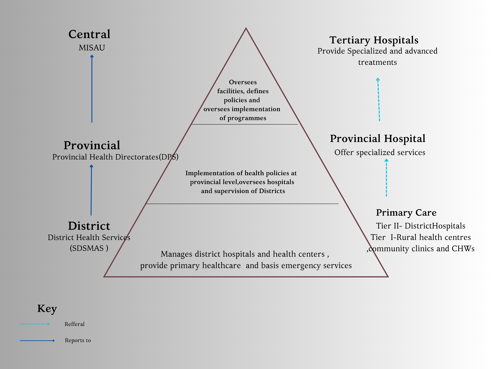
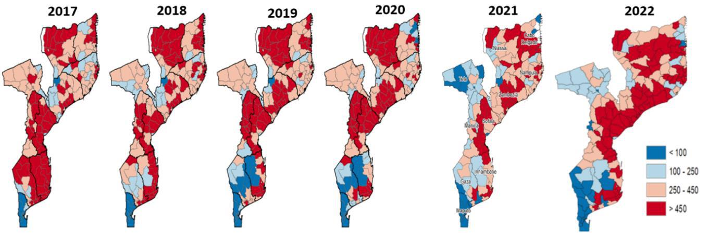
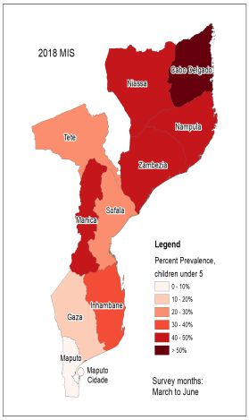
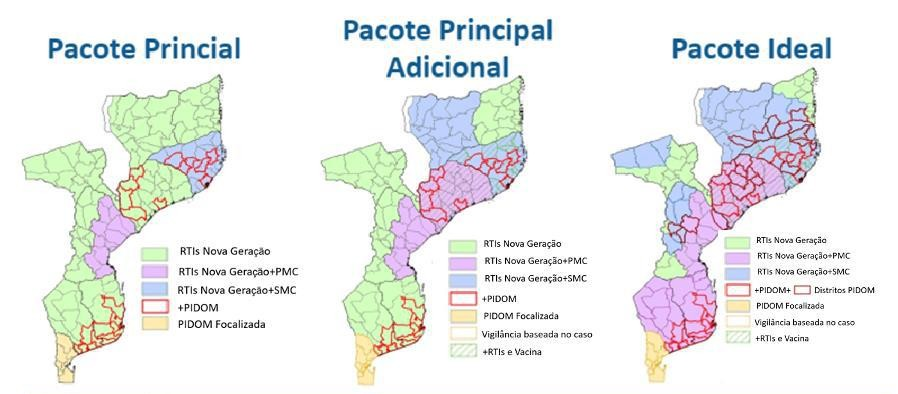

MOZAMBIQUE MALARIA EPIDEMIOLOGY SUMMARY
Author: Herieth Alexander Last Updated: 12/12/2024
MALARIA SITUATION
Mozambique contributes approximately to 5% of globally observed malaria cases annually. This makes it one of the 11 nations that bear 70 percent of the world’s malaria burden .In Mozambique close to half of pediatric admissions are due to malaria and a third of hospital deaths are attributed to malaria. Mozambique reported about 10.4 million cases and 21,551 deaths in 2022 .Efforts to reduce transmission have resulted in some improvements but cyclones and extremist groups have been the greatest threats to this progress as the resulting displacement , deaths and break in service provision often leave societies vulnerable.
| Metric | Mozambique |
|---|---|
| Population | 33635160.0 |
| Urbanization | 32.0 |
| Median Age | 17.6 |
| Prevalence rate (Pfpr6-59) | 32.3 |
| Incidence (/1000 people) | 316.0 |
| Population at risk | 33635160.0 |
Sources- WORLD BANK , MSP 2023-2030 , DHS Program

Mozambique has about 2500km of coastline along the Indian Ocean making it vulnerable to tropical cyclones. On avarage , Mozambique experiences 4 to 5 cyclones a year with majority of them not only entering its sphere of influence but also making landfall. Nampula, Zambézia and Sofala are the regions that have been mostly affected .The typical cyclone season depends on the summer monsoon. In the months before (May to June) and after (October to November), the most severe storms occur.In December 15th , 2024 a Category 4 cyclone made land fall . The cyclone named Chido was 50 kilometers in Diamter with speeds of up to 220 km/h were measured on the open sea.
Malaria Control Interventions
Mozambique has multiple interventions in place to combat malaria transmision. Insecticide-Treated Nets (ITNs) are distributed through mass campaigns and routine systems. Indoor Residual Spraying (IRS)is targeted in high-risk areas. Malaria vaccines based on global evidence have been piloted for intergration in routine child immunization.To improve outcomes in malaria cases ,Artemisinin-based Combination Therapies (ACTs) are used as first-line treatment and there is efforts towards Universal testing for suspected cases and Strengthened referral systems for severe malaria.
In addition to current efforts , Mozambique realizes the interplay of various factors into malaria transmission and collaboration with agriculture, education, and urban planning to mitigate malaria drivers (e.g., irrigation projects, housing improvements ) is part of malaria mitigation strategies.
Over the past 20 years , Mozambique has made significant progress in malaria control including adoption of policy to direct local implementation control activities.

Mozambique Malaria Strategic Plan (MSP) 2023-2030 summary
Mozambique has set ambitious malaria reduction goals for 2030, aiming to decrease national malaria incidence from 392 cases per 1,000 in 2022 to 216 cases per 1,000, lower hospital mortality from 1 per 100,000 to 0.77 per 100,000, and eliminate local transmission in 20 low-transmission districts. To achieve these targets, the country has outlined six strategic objectives.
First, it seeks to strengthen health systems and enhance multisectoral coordination to ensure an integrated response. Second, Mozambique aims to ensure universal access to effective vector control measures and malaria vaccination. Third, all suspected malaria cases will be tested and treated to improve case management and reduce transmission. Fourth, communication efforts will be enhanced to drive behavioral change and community engagement. Fifth, Mozambique will strengthen surveillance and response systems to improve data collection and rapid intervention. Lastly, efforts will be made to maintain malaria services during emergencies, ensuring uninterrupted prevention and treatment even in crisis situations.
| Indicator | 2022-23 DHS | 2018 MIS | 2015 AIS | 2011 DHS |
|---|---|---|---|---|
| Malaria prevalence according to RDT | 32.3 | 38.9 | 40.2 | 38.3 |
| Malaria prevalence according to microscopy | NA | NA | NA | 35.1 |
| Households with at least one insecticide-treated mosquito net (ITN) | 56.5 | 82.2 | 66.0 | 51.4 |
| Net source: Mass distribution campaign | 78.5 | 88.7 | NA | NA |
| Persons with access to an insecticide-treated mosquito net (ITN) | 44.8 | 68.5 | 53.8 | 37.0 |
| Population who slept under an insecticide-treated mosquito net (ITN) last night | 38.6 | 68.4 | 45.4 | 29.5 |
| Existing insecticide-treated mosquito nets (ITNs) used last night | 72.3 | 85.4 | 70.9 | 68.3 |
| Households with indoor residual spraying (IRS) in last 12 months | NA | 15.6 | 11.2 | 18.5 |
| SP/Fansidar 2+ doses during pregnancy | 45.5 | 60.8 | 35.8 | 19.6 |
| SP/Fansidar 3+ doses during pregnancy | 25.3 | 40.6 | 23.3 | 9.5 |
| Children under 5 with fever in the last two weeks | 10.2 | 31.0 | 29.1 | 13.4 |
| Children with fever for whom advice or treatment was sought, the source was a public sector facility | 94.1 | 95.9 | 88.0 | 88.4 |
| Children with fever for whom advice or treatment was sought, the source was a private sector facility | 1.6 | 2.1 | 2.5 | 1.7 |
| Children who took any ACT | 85.0 | 98.6 | 92.6 | 59.9 |
source-DHS program

ADMINISTRATIVE BOUNDARIES
Mozambique is administratively divided into 11 provinces ( provincias ), 161 districts( distritos ), 444 administrative posts ( postos administrativos )and then into localities ( localidades ). There are 65 municipalities (recently increased).Administrative and health districts are one and the same and there is on going efforts to decentralize and improve autonomy of Provinces.
Approximately 66% of Mozambican population resides in rural areas. Urbanization is more pronounced in Maputo City, while Zambézia and Nampula have a predominantly rural population. The country’s average population density is 32 people per km², with coastal and northern regions being more densely populated.

MALARIA TRANSMISSION PATTERNS
Role of Climate and Urbanization
As in most countries, malaria burden is unevenly distributed across Mozambique. Urbanization plays a significant role, as people living in rural areas are three times more likely to test positive for malaria and report more malaria-related deaths . Since most of the population lives in rural areas, where health infrastructure is often inadequate, this disparity poses a significant challenge.
Mozambique has a transitional climate ranging from tropical in the
north to subtropical climate in the south. This is also reflected in
transmission rates.Transmission decreases as you move from northern and
coastal areas to south and high attitude areas.Prevalence in the
Northern and Central regions ranges from 29% in Sofala to 57% in Cabo
Delgado. Southern Mozambique generally has low transmission, except for
Inhambane, where prevalence rates have reached as high as 35%.
Rainy seasons are slightly longer in the north and occur in the months
of November-to April. There is a lag between onset of rains and the
annual peak of the malaria outbreak . This varies with each district and
year but typically ranges from 6 to 10 weeks and therefore the peak in
malaria prevalence typically occurs around January-March. Negative El
Niño(La Nina) years increase malaria transmission in the southern
region.

Variation of Malaria Cases and rainfall patterns
Adapted from:Interannual climate variability and malaria in Mozambique. GeoHealth,Harp et al
Vector and parasite species
Malaria in Mozambique is primarily caused by Plasmodium falciparum, the most virulent malaria parasite. The disease is transmitted by various Anopheles mosquito species, with Anopheles gambiae being dominant in the northern and central regions, while An. funestus is widespread along the coast. In the south and central areas, An. arabiensis is a key vector. An emerging concern is An. stephensi, which poses a growing threat, particularly in urban environments.
| Metric | Mozambique |
|---|---|
| Mosquito species | Anopheles gambiae s.s., An. arabiensis, and An. funestus s.s. |
| Parasite | Plasmodium falciparum |
| Peak transmission season | October through March |
| Drivers | Rainfall, Atitude , Cyclones |
| Extreme weather events | Cyclones |
| Weather type | Tropical to Subtropical |
ORGANISATION OF HEALTH ADMINISTRATION , SERVICE DELIVERY AND REPORTING
Public health services cater to approximately 60% of the population, with private facilities serving about 10%.There has been progressive investment in health infrastructure, particularly rural healthcare.The health sector is coordinated nationally by the Ministry of Health (MISAU), with implementation devolved to Provincial Health Directorates (DPS) and District Health Services (SDSMAS). There is efforts to decentralize resources and decision-making authority from central to provincial level.
The healthcare system is hierarchically structured into four levels:
Level I & II: Primary care, peripheral facilities (health posts and rural clinics)
Level III & IV: Secondary and tertiary care with specialized services.
Community Health Workers (CHWs):
CHWs, locally known as Agentes Polivalentes Elementares (APEs) play a critical role in healthcare delivery, especially in remote areas.There are 17,648 deployed out of 18,000 planned and 5595 of these are involved in diagnosing and treating uncomplicated malaria as well as promoting preventive measures, and referring severe cases. APEs are keystone for malaria control in rural and remote areas.

Organisation of Health Administration and Service delivery
Mozambique transitioned from paper based reporting that was aggregated at district ,provincial and national level to a DHIS2 based system in 2015. While the initial approach was reliable and consistent , the quality of data did not meet malaria control management needs. Currently a full information M&E system based on the DHIS2 platform collects malaria data. This includes outpatient attendance, testing, and confirmed cases, with dis aggregation by age and gender. Facilities with electronic systems fill data directly to the system and paper based records are entered into the system by District health teams .Efforts are underway to strengthen real-time data availability for decision-making.

Surveys like IMASIDA (Immunization, Malaria, HIV Indicators Survey) provide periodic data on treatment-seeking behavior, bed-net use, and coverage of interventions. Indicators tracked include Outpatient visits for suspected malaria , Laboratory-confirmed cases by rapid diagnostic tests (RDTs) with Age-disaggregated data on positive cases as well as bed-net coverage and use.
| Metric | Mozambique | Breakdown |
|---|---|---|
| OPD Attendance | YES | Age and Sex |
| Suspected | YES | Age and Sex |
| LLN | YES | NA |
| Completeness | YES | NA |
| IPTs | YES | NA |
| Tested | YES | Age, Sex and test type |
| Cases | YES | Age and Sex |
| Commodities | YES | NA |
| Fevers | YES | Age and Sex |
| Stock outs | YES | NA |
| Deaths | YES | Age and Sex |
CURRENT STRATIFICATION MAPS
Mozambique incorporated maps to inform decison making and planning . A structured approach to optimizing malaria interventions in Mozambique involves using complementary analytical methods. It begins with spatial analysis of malaria burden to prioritize high-impact areas. Empirical data analysis and mathematical models help refine intervention targeting by evaluating past interventions and predicting optimal strategies. Cost-effectiveness analysis ensures interventions maximize case reductions within a fixed budget over five years. Finally, operational feasibility adjustments account for logistical and geographic constraints, ensuring interventions are practical and effectively implemented. This multi-faceted approach enhances the impact and efficiency of malaria control efforts.In addition to prevalence and incidence maps , risk maps and vulnerability to epidemics are mapped at district level. This aids with tailoring of interventions.

Malaria incidence trend at district level

Malaria prevalence in Under-fives by Province
``

Tailored Intervention Packages based on burden